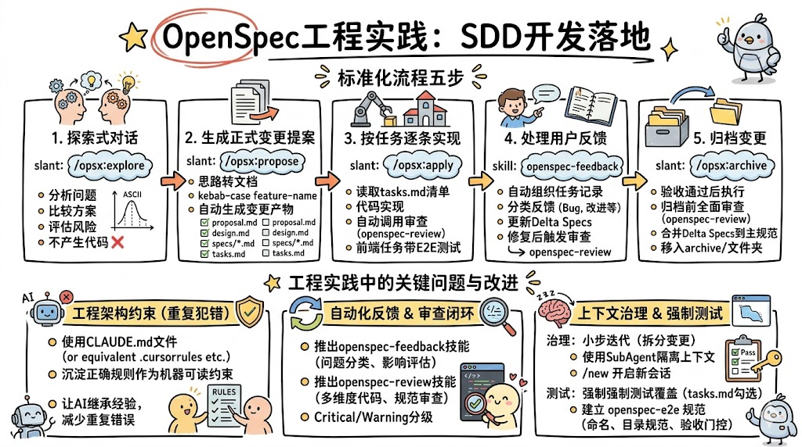
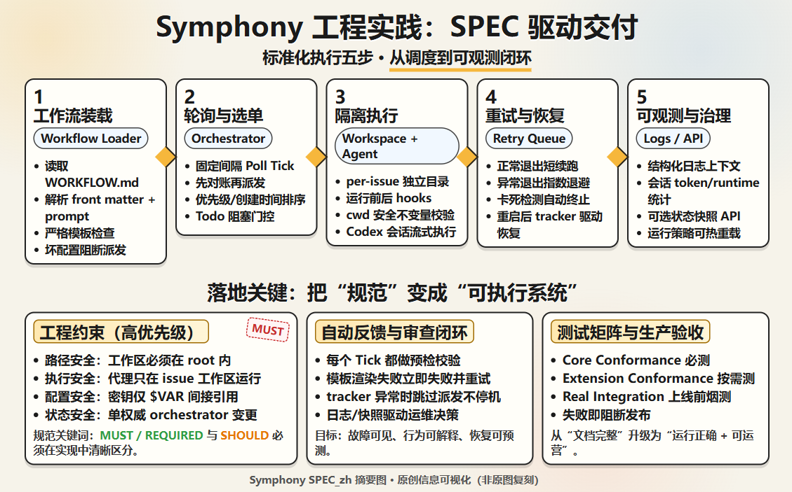

1) 引子：神秘屋
开场意象：不断扩建、风格混杂、局部反复重建的“神秘屋”。
“神秘屋”是一幢真实存在于美国加州的大宅，由一位 19 世纪末的富有老太太长期亲自设计与监工建造。她极其热爱建筑，但从不做整体规划，想到哪里就建到哪里。
于是，房间 A 是维多利亚式，房间 B 是罗马式，房间 C 是哥特式；不满意就拆掉重建，某些房间甚至被拆了 16 次。为了省事，一些窗户和门在改造时直接被砌进墙里。最终，这座房子扩展到约 160 个房间、2000 扇门、10000 扇窗户，像迷宫一样庞大却难以理解。
给大家一个提示问题：听到这里，你们会不会觉得，这其实就很像现在流行的 Vibe Coding？
今天，很多 AI 开发过程也在复制这条路径：需求由个人即时提出，缺少评审；代码持续堆叠，缺少测试；功能快速扩展，但结构与文档逐步失控。
这种过程很有快感，也很容易让人沉浸其中。但当项目进入协作、维护、交付阶段，团队会发现自己正在维护一座软件“神秘屋”。
神秘屋式开发：想法即需求 → 立刻生成代码 → 持续补丁叠加 → 规模扩张 → 维护成本陡增
这正是本培训要解决的问题：从“个体灵感驱动”切换到“规范与验证驱动”，让 AI 开发从好玩走向可持续。
2) SDD：规范驱动开发（Specification-Driven Development）
SDD 的核心不是“让 AI 写得更快”，而是把规范升级为研发主驱动：先定义做什么，再自动化实现怎么做。规范成为团队共同语言和 AI 执行依据，代码是规范落地的产物。

OpenSpec 工程实践示意图（来源：johng.cn OpenSpec 工程实践文章）。
OpenSpec 参考仓库：Fission-AI/OpenSpec。

OpenAI Symphony 工程实践示意图（本地素材：docs/training/symphony-spec.png）。
OpenAI Symphony 参考仓库：openai/symphony。
2.1 为什么要引入 SDD
传统痛点
- 需求文档与代码脱节，验收时难以对齐。
- 沟通成本高，跨角色理解偏差大。
- 问题发现晚，修复成本随着阶段后移快速上升。
- 知识沉淀在个人经验，人员变动后可用资产流失。
SDD 价值
- 规范即资产：需求、设计、测试标准统一沉淀。
- 规范即执行输入：可直接驱动 AI 生成与修复。
- 规范可版本化：变化可追踪、可回溯、可审计。
- 规范可评审：把缺陷前移到“写代码之前”。
2.2 SDD 的最小可执行流程
- 选低风险试点：先从边缘模块或新功能开始，降低组织阻力。
- 写 SPEC：按“需求规范 + 技术规范 + 测试规范”组织内容。
- 多角色评审 SPEC：产品、研发、测试共同签字，先达成共识再编码。
- AI 按 SPEC 生成实现与测试：减少自由发挥，增强一致性。
- 门禁验证：lint、test、PR 模板检查、指标快照。
- 持续迭代规范：问题先回写规范，再改代码，避免重复犯错。
3) Agentic AI for Coding
Agentic AI for Coding 是让 AI 在工程约束下完成完整交付闭环：从任务输入到代码实现、验证、PR 证据与人工验收，而不只是输出一段代码建议。
3.1 流程结构：从想法到可交付 PR
需求理解 → 代码理解 → 实现改动 → 测试验证 → PR 交付 → 发布追踪
需求理解
- 读 Issue、验收条件、背景上下文。
- 把目标转成可执行任务清单。
- 补齐 Definition of Ready：范围、边界、非目标与约束。
- 识别依赖方与前置条件，避免“开工后才发现缺输入”。
代码理解
- 检索模块边界与依赖关系。
- 圈定改动文件与测试范围。
- 明确关键调用链与数据流，定位真正控制行为的代码点。
- 同步识别潜在回归面：权限、配置、接口契约、兼容性。
实现阶段
- 在既有系统中安全改代码。
- 补齐必要注释与类型信息。
- 优先最小可验证改动，先通一条主路径再扩展细节。
- 保持与仓库规范一致：目录边界、命名、错误处理和日志风格。
质量保障
- 单元测试 + 集成测试。
- lint / type-check / gate 校验。
- 把失败结果回写为可行动项：定位、原因、修复、复验。
- 对高风险改动增加针对性回归，避免“测试过但线上仍出错”。
协作交付
- PR 描述完整，审查重点清晰。
- 保留变更依据与测试记录。
- 明确影响范围、风险等级、回滚方案与观察指标。
- 将关键设计决策与取舍写清，减少 reviewer 反复沟通成本。
发布运维
- 通过流水线发布与环境隔离。
- 生成周报、指标快照、回归结果。
- 按环境分级放量，结合告警阈值与自动回滚策略。
- 沉淀发布后复盘：问题根因、改进动作、流程更新。
3.2 能力建设：执行能力 + 质量能力
任务理解 + 仓库理解
- 明确目标、边界和验收标准。
- 识别影响模块、调用链和风险点。
- 建立“需求-实现-测试”映射表，确保每条需求都有落地点。
- 优先复用已有实现与测试资产，减少重复造轮子。
计划拆解 + 工具调用
- 先计划后动手，降低盲改概率。
- 熟练使用搜索、读写、测试、日志工具。
- 把任务拆成“可验证的小步”，每步都有明确完成标准。
- 建立工具调用顺序：定位→修改→验证→证据整理，避免遗漏。
安全改代码 + 自动验证
- 在已有架构内最小改动实现需求。
- 执行 lint / test / build / eval 并闭环修复。
- 关键变更默认双重验证：本地快速校验 + CI 门禁复验。
- 将失败修复纳入同一变更上下文，保证问题可追踪、可复现。
协作汇报 + 可交接
- 输出清晰变更说明与风险提示。
- 让人类 reviewer 能快速接手和判断。
- 固定汇报模板：做了什么、为什么、如何验证、剩余风险。
- 交接时提供最小复现步骤和后续建议，降低团队接手门槛。
4) GitHub 生态
4.1 为什么 GitHub 生态适合承载 AI for Coding
上下文集中
- Issue、PR、代码、Action 日志天然关联。
- 便于 AI 读取历史上下文和决策依据。
- 从需求讨论到最终合并都在同一平台留痕，减少信息散落。
- 可以快速追溯“为什么这样改、谁评审过、验证结果是什么”。
流程与治理天然存在
- 分支、保护规则、CODEOWNERS、审批机制即插即用。
- 高风险改动可被强制人工审查。
- 通过模板与规则把团队共识固化为标准动作，降低个人差异。
- 治理策略可渐进增强：先轻规则，再按风险等级分层收紧。
自动化成熟
- Actions 可直接承接 CI、发布、评估任务。
- 失败信息可回写到 Issue / PR，形成可追踪闭环。
- 同一条流水线可复用到开发、测试、发布多个阶段，降低维护成本。
- 支持将质量门禁前置到提交阶段，尽早暴露问题、缩短反馈周期。
人机协作边界清晰
- AI 负责执行与产出。
- 人类负责架构决策与最终合并批准。
- 通过 PR 审查把“AI 产出”转化为“团队认可的工程变更”。
- 责任链明确：谁提出、谁实现、谁验证、谁批准都可审计。
4.2 GitHub-native 实践框架
下面用统一主流程，把 GitHub 生态工具栈映射到每一个交付环节，形成“任务可追踪、执行可验证、结果可审计”的闭环：
Task(Issue) → Plan → Code → Verify → PR → Review → Release
Task / Plan
- GitHub Issues：沉淀需求、验收标准与边界。
- GitHub Projects：管理优先级、泳道与状态流转。
Code
- GitHub Copilot：个人开发场景下的高效补全与建议。
- Copilot Agent：按任务自主执行改动、补测与说明。
Verify / Review / Release
- GitHub Actions：CI/CD 与门禁验证自动化。
- GitHub Code Review：审查质量、风险与合并决策。
- Task(Issue)：在 Issue 中写清业务背景、目标、验收标准、非目标与风险，避免“只有一句需求就开工”。
- Plan(Projects)：在 Projects 中拆分任务卡片、设置负责人与优先级，确保团队对节奏和依赖有共同认知。
- Code(Copilot + Agent)：Copilot 提升个人编码效率，Agent 负责任务级实现与测试补齐，减少重复机械工作。
- Verify(Actions)：统一跑 lint/test/build/eval，把质量标准从“人工感觉”升级为“流水线事实”。
- PR：以 PR 作为交付单元，要求变更说明、测试结果、风险评估、回滚方案完整可审计。
- Review(Code Review)：人类 reviewer 聚焦架构决策、边界条件、回归风险，AI 产出必须经过团队批准后合并。
- Release(Actions + Environments)：按环境分级发布并保留发布记录，出现异常可快速定位并回滚。
落地建议：先从一个业务线跑通这条最小闭环，再逐步把模板、门禁和评估扩展到全团队，避免“一次性全面改造”带来的推进阻力。
5) 结合当前仓库的落地映射
以下内容直接来自本仓库的文件结构和规范，便于培训后立即执行。
5.1 核心入口与规范文件
- AGENTS.md：统一入口，定义默认执行流程和中断边界。
- SPEC.md：项目级需求与约束基线，用于统一目标、范围和验收口径。
- .github/copilot-instructions.md：编码规范、质量要求、PR 约束。
- WORKFLOW.md：自动化调度配置（hooks、并发、重试、超时）。
- .github/pull_request_template.md：PR 描述完整性基准。
5.2 .github 目录运行体系（重点）
在本仓库里，真正决定 AI for Coding 是否可规模化落地的，不是示例业务代码，而是 .github 下的流程资产。它把“任务定义、执行路径、质量门禁、交付审查”变成可复制的标准机制。
issues-backlog(draft/ready/published) → publish script → GitHub Issue → manual 或 automation 执行 → PR/Review/Release
规范入口层
- .github/ISSUE_TEMPLATE/：统一任务输入结构，减少需求歧义。
- .github/pull_request_template.md：固定 PR 输出结构，强制测试计划与审查重点。
- .github/copilot-instructions.md：约束 AI 执行边界、质量要求与交付规范。
任务池层（issues-backlog）
- .github/issues-backlog/：本地 backlog 池，支持 draft/ready/published 状态流转。
- 先在本地沉淀任务，再发布到 GitHub，保证任务质量先达标再进入执行队列。
- 发布后自动回填 issue 编号与 URL，实现本地文档与远端任务双向可追踪。
Manual 模式（人工监督）
- .github/manual/README.md：定义“一次一任务”的人工介入模式。
- prepare-single-issue 脚本：准备单 Issue 工作区并生成执行提示。
- publish-backlog-issue 脚本：将本地 backlog 发布为 GitHub Issue 并自动回填元数据。
- 适用场景：高风险任务、流程试运行、需要现场讲解和逐步验收的任务。
Automation 模式（批处理编排）
- .github/automation/README.md：定义低干预或无人值守模式。
- celery_dispatcher.py + celery_tasks.py：调度与执行分离，支持队列化并发处理。
- scripts/：run-forever、run-celery-worker、quality-gate、metrics-snapshot 等运维与门禁脚本。
- 核心能力：自动筛选可执行任务、隔离执行、失败分类、指标沉淀、周报支撑。
培训建议：先讲 Manual 模式建立“可控闭环”，再讲 Automation 模式实现“规模化吞吐”。两者不是替代关系，而是从稳态到规模的升级路径。
5.3 培训现场可演示的最小闭环
- 选一个已有 Issue 或模拟需求。
- 展示 Agent 如何读取规范与代码上下文。
- 完成一次小改动并补齐测试。
- 运行 gate，展示失败项定位与修复。
- 生成 PR 描述并标注测试计划（已执行 / 未执行）。
6) 实战经验
这里讲的是 code 里的实战经验：哪些动作适合做成 Skill，哪些上下文应该通过 MCP 接进来，哪些经验要放进跨会话记忆，哪些大任务要交给 code agent 的 multi-agent 能力并行跑。四者配合起来，Agent 才能稳定理解任务、持续执行并把结果沉淀下来。
6.1 Skill 工具
6.2 MCP 工具
6.3 跨会话记忆：把代码经验保存下来
- 经验做法：每个会话解决单个问题，不要在一个会话中处理过多任务。这也就是要拆分Issue的原因。
- Global Memory：放架构原则、技术栈选择、模块边界、命名规范和质量红线等一系列全局信息。可以放到SPEC.md和AGENTS.md
- Task Memory：放单次任务的上下文、临时决策、执行过程和验证结果。说白了就是拆分出来的Issue内容。
- 可以记忆用工具 server-memory：@modelcontextprotocol/server-memory 知识图谱存储形式，适合承载长期记忆。
6.4 多任务编排：用 multi-agent 跑并行任务
- 规划 Agent：我一般先让规划 Agent 读 Issue 和 Global Memory，让他拆任务到小的粒度和单元测试如何编写。
- 执行 Agent：一些执行 Code Agent 有多任务的能力，可以分别负责代码修改、测试补齐、文档更新、上下文回写。
- Review Agent：我一般会让他把代码再讲一遍，然后说下整体架构有没有跑偏，并结合GitHub的PR工具进行审查。
- 经验做法：别一下跑多个，咱们没有紧张到需要多个Agent去写代码的程度。关键是想好、设计好、分配好任务。
一句话总结：Skill 负责把重复动作标准化，MCP 负责把外部能力接进来，跨会话记忆负责沉淀经验，multi-agent 负责把大任务并行跑起来。
6.5 最小可落地组合
- 个人先用 Skill + MCP，把最常见的设计、文档、上下文读取打通。
- 团队再加跨会话记忆，把项目约定、踩坑经验、接口契约沉淀下来。
- 规模化时再上 multi-agent，把一个大任务拆成多个并行子任务去跑。
6.6 什么时候最值得上这些能力
- 当重复动作已经影响效率，且开始出现“每次都要重新讲一遍”的情况。
- 当任务需要跨会话、跨角色、跨仓库持续推进时。
- 当一个大 Issue 需要拆成多个并行任务，适合让多个 code agent 一起跑时。
实战顺序建议：先从 Skill 工具试点，再把 MCP 接上，然后加跨会话记忆，最后再用 multi-agent 跑并行任务；不要一开始就把所有能力全装上。
7) 结尾总结
- Vibe Coding 解决“快”，AI for Coding 解决“能否进入真实研发流程”。
- 高价值不在于生成几行代码，而在于可验证、可审计、可协作、可持续迭代。
- SDD 把“规范”变成执行入口，让 AI 从对话助手升级为可治理的工程执行者。
- 落地路径建议：从 GitHub-native + 人机协作 + 质量闭环 起步，而不是一步到位追求全自动。
一句话：AI for Coding = AI + 工具 + 工作流 + 工程治理。
Vibe Coding 常见问题
- 能写出来，不一定能维护。
- 能跑起来，不一定能验证。
- 改动影响范围不可见，回归风险高。
- 输出质量依赖个人提示词，不稳定。
AI for Coding 的目标
- 工程化：不是聊天结果，而是可合并变更。
- 可验证：必须经过 lint / test / gate。
- 可审计：Issue、PR、Actions 全链路可追踪。
- 可协作：AI 实现，人类 review 与决策。